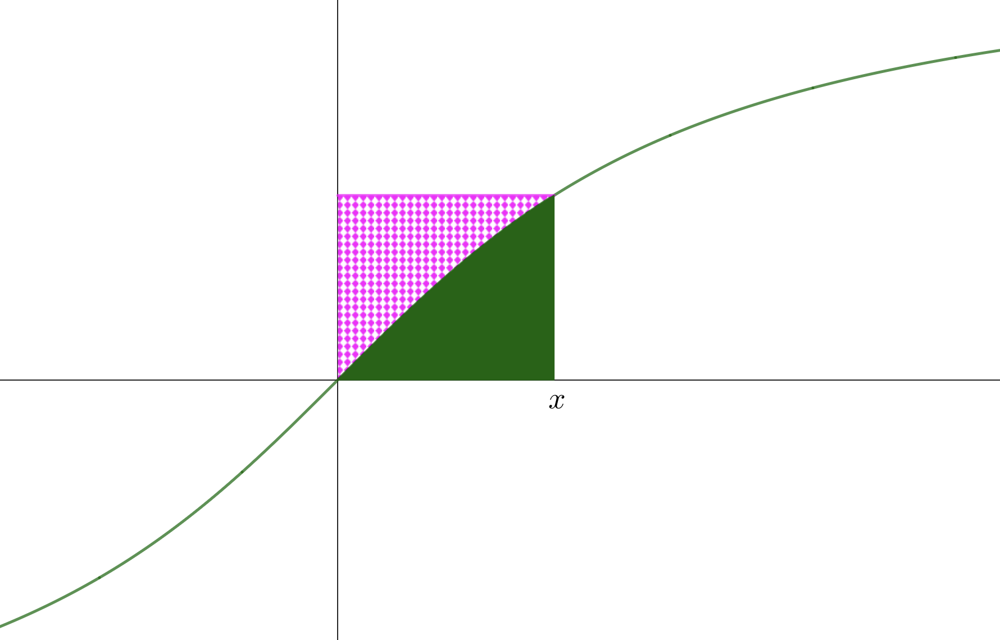
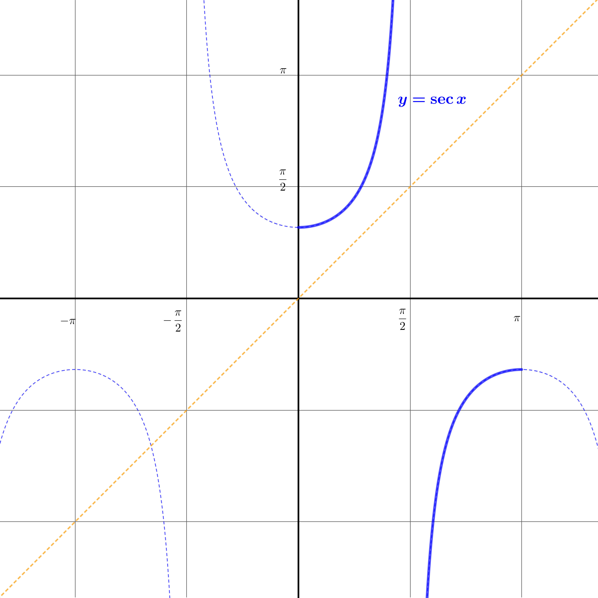
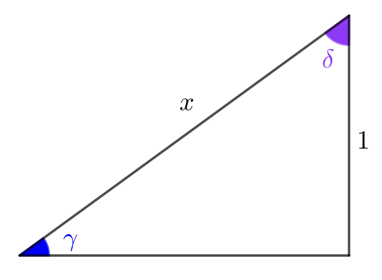
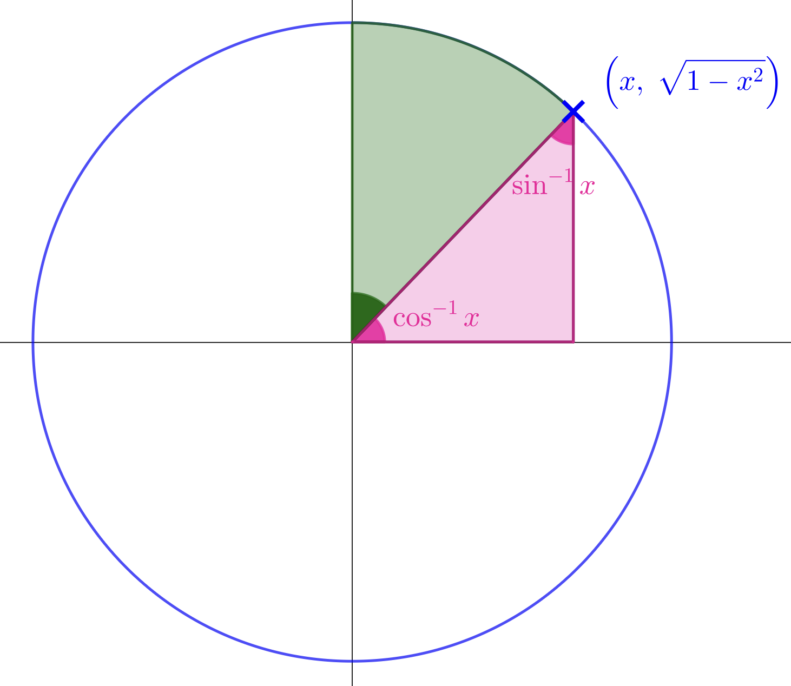
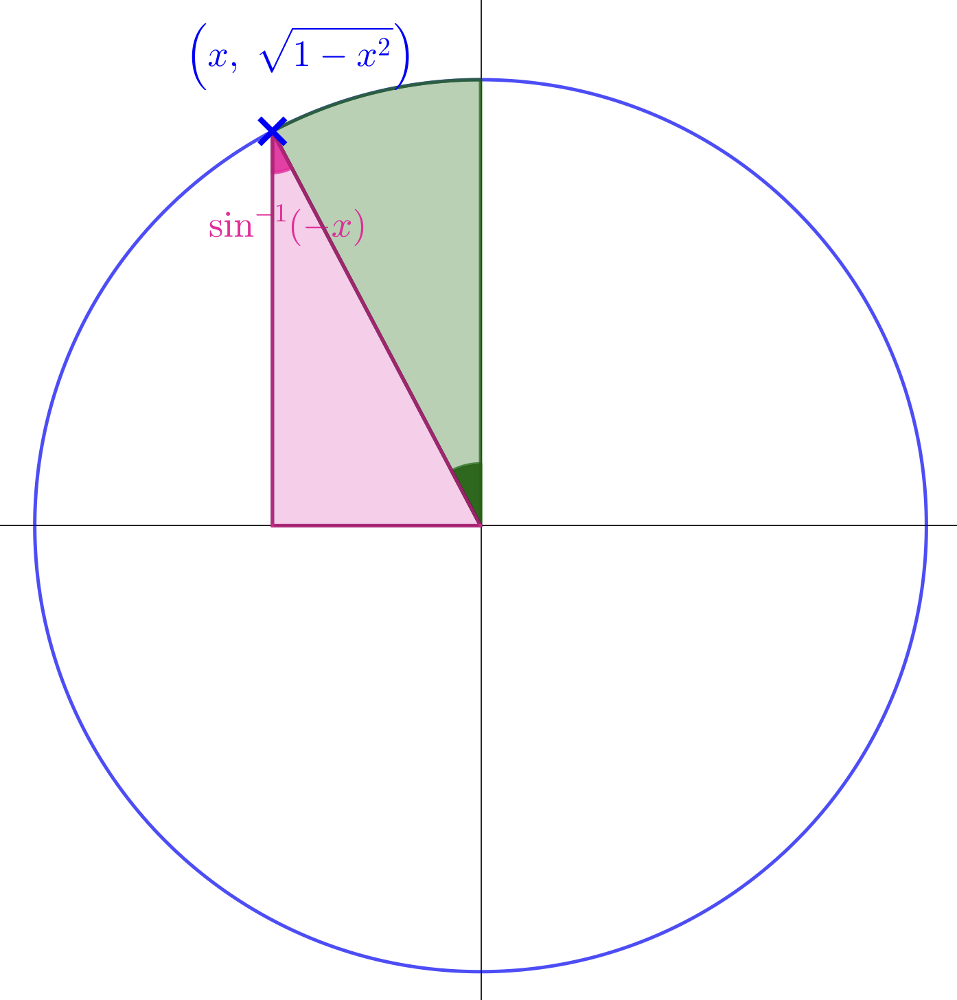

Welcome to Inverse Circular Functions: Part 5
This extension stage covers the graphs, domains, ranges, and derivatives of arcsec, arccosec, and arccot, together with compositions and identities involving these functions.
These extension functions build directly on arcsin, arccos, and arctan — and the same implicit differentiation technique from Part 3 applies to their derivatives!
 Dr Brian Brooks
Dr Brian Brooks
Mathematics InSight



The graph of \(y = \cot x\), with the relevant branch highlighted, is shown below.

(a) Unlike \(\sec x\) and \(\operatorname{cosec}\, x\), the range of \(\cot x\) on its principal branch is all of \(\mathbb{R}\). What are the domain and range of \(\operatorname{arccot} x\)?
(b) Add the graph of \(y = \operatorname{arccot} x\) to the diagram.
Use the two right-angled triangles shown to simplify each expression.


(a) \(\sin(\operatorname{arccosec} x)\)
(b) \(\operatorname{cosec}(\arcsin x)\)
(c) \(\cos(\operatorname{arcsec} x)\)
(d) \(\sec(\arccos x)\)
(a) \(\sin(\operatorname{arccosec} x)\) (b) \(\operatorname{cosec}(\arcsin x)\) (c) \(\cos(\operatorname{arcsec} x)\) (d) \(\sec(\arccos x)\)
Use the right-angled triangle shown to simplify \(\tan(\operatorname{arccot} x)\) and \(\cot(\arctan x)\).

Simplify \(\tan(\operatorname{arccot} x)\) and \(\cot(\arctan x)\).
Since \(\tan(\operatorname{arccot} x) = \dfrac{1}{x}\), what does this tell us about the relationship between \(\operatorname{arccot} x\) and \(\arctan x\)? Is it true that \(\operatorname{arccot} x = \arctan\left(\dfrac{1}{x}\right)\) for all \(x \neq 0\)?
For \(x > 0\): both \(\operatorname{arccot} x\) and \(\arctan(1/x)\) lie in \(\bigl(0, \tfrac{\pi}{2}\bigr)\), so
\[\operatorname{arccot} x = \arctan\left(\frac{1}{x}\right) \quad \text{for } x > 0.\]For \(x < 0\): \(\operatorname{arccot} x \in \bigl(\tfrac{\pi}{2}, \pi\bigr)\) but \(\arctan(1/x) \in \bigl(-\tfrac{\pi}{2}, 0\bigr)\), so
\[\operatorname{arccot} x = \pi + \arctan\left(\frac{1}{x}\right) \quad \text{for } x < 0.\]The graphs of \(y = \operatorname{arccot} x\) and \(y = \arctan x\) are shown together below.

What symmetry do you observe? Use it to state the value of \(\operatorname{arccot} x + \arctan x\).
The graphs of \(y = \operatorname{arcsec} x\) and \(y = \operatorname{arccosec} x\) are shown together below.

What symmetry do you observe? Use it to state the value of \(\operatorname{arcsec} x + \operatorname{arccosec} x\).
Find \(\operatorname{arccot} x + \arctan x\) and \(\operatorname{arcsec} x + \operatorname{arccosec} x\).
In each case the two graphs are reflections of one another in the horizontal line \(y = \tfrac{\pi}{4}\), so their sum is always \(\tfrac{\pi}{2}\). This mirrors the familiar identity \(\arcsin x + \arccos x = \tfrac{\pi}{2}\).
differentials of \(\boldsymbol{\operatorname{arcsec} x}\), \(\boldsymbol{\operatorname{arccosec} x}\), and \(\boldsymbol{\operatorname{arccot} x}\)
Find \(\dfrac{\mathrm{d}}{\mathrm{d}x}\operatorname{arcsec} x\) by two methods.
Method 1 — implicit differentiation
Let \(y = \operatorname{arcsec} x\), so \(x = \sec y\) with \(y \in [0,\pi]\setminus\{\tfrac{\pi}{2}\}\).
(a) Find \(\dfrac{\mathrm{d}x}{\mathrm{d}y}\) in terms of \(y\).
(b) Use the identity \(\sec^2 y - \tan^2 y = 1\) to express \(\tan^2 y\) in terms of \(x\). For \(y \in [0, \tfrac{\pi}{2})\), is \(\tan y\) positive or negative?
(c) Hence find \(\dfrac{\mathrm{d}y}{\mathrm{d}x}\) in terms of \(x\).
Method 2 — using \(\boldsymbol{\operatorname{arcsec} x = \arccos\!\left(\dfrac{1}{x}\right)}\)
(d) Differentiate using the chain rule to confirm your answer.
Find \(\dfrac{\mathrm{d}}{\mathrm{d}x}\operatorname{arcsec} x\) by two methods.
Method 1:
\[\begin{aligned} &x = \sec y \;\Rightarrow\; \frac{\mathrm{d}x}{\mathrm{d}y} = \sec y\tan y\\[8pt] &\tan^2 y = \sec^2 y - 1 = x^2-1\\[6pt] &\text{For } y\in\bigl[0,\tfrac{\pi}{2}\bigr)\!:\; \tan y \geq 0,\;\text{so } \tan y = \sqrt{x^2-1}\\[8pt] &\frac{\mathrm{d}y}{\mathrm{d}x} = \frac{1}{\sec y\tan y} = \frac{1}{x\sqrt{x^2-1}} \end{aligned}\]Method 2:
\[\frac{\mathrm{d}}{\mathrm{d}x}\arccos\left(\frac{1}{x}\right) = \frac{-1}{\sqrt{1-\tfrac{1}{x^2}}}\cdot\left(-\frac{1}{x^2}\right) = \frac{1}{x^2\sqrt{\tfrac{x^2-1}{x^2}}} = \frac{1}{x\sqrt{x^2-1}}\] \[\boxed{\frac{\mathrm{d}}{\mathrm{d}x}\operatorname{arcsec} x = \frac{1}{x\sqrt{x^2-1}}, \quad x > 1}\]
Use a similar approach to find \(\dfrac{\mathrm{d}}{\mathrm{d}x}\operatorname{arccosec} x\).
Method 1: Let \(y = \operatorname{arccosec} x\), so \(x = \operatorname{cosec}\, y\). Find \(\dfrac{\mathrm{d}x}{\mathrm{d}y}\) and use \(\cot^2 y = \operatorname{cosec}^2 y - 1\).
Method 2: Use \(\operatorname{arccosec} x = \arcsin\left(\dfrac{1}{x}\right)\) and differentiate by the chain rule.
Find \(\dfrac{\mathrm{d}}{\mathrm{d}x}\operatorname{arccosec} x\).
Method 1:
\[\begin{aligned} &x = \operatorname{cosec}\, y \;\Rightarrow\; \frac{\mathrm{d}x}{\mathrm{d}y} = -\operatorname{cosec}\, y\cot y\\[8pt] &\cot^2 y = \operatorname{cosec}^2 y - 1 = x^2-1\\[6pt] &\text{For } y\in\bigl(0,\tfrac{\pi}{2}\bigr]\!:\; \cot y \geq 0,\;\text{so } \cot y = \sqrt{x^2-1}\\[8pt] &\frac{\mathrm{d}y}{\mathrm{d}x} = \frac{-1}{x\sqrt{x^2-1}} \end{aligned}\] \[\boxed{\frac{\mathrm{d}}{\mathrm{d}x}\operatorname{arccosec} x = \frac{-1}{x\sqrt{x^2-1}}, \quad x > 1}\]Now find \(\dfrac{\mathrm{d}}{\mathrm{d}x}\operatorname{arccot} x\) by two methods.
Method 1: Let \(y = \operatorname{arccot} x\), so \(x = \cot y\). Find \(\dfrac{\mathrm{d}x}{\mathrm{d}y}\) and use a Pythagorean identity.
Method 2: Differentiate both sides of \(\operatorname{arccot} x + \arctan x = \dfrac{\pi}{2}\).
Find \(\dfrac{\mathrm{d}}{\mathrm{d}x}\operatorname{arccot} x\).
Method 1:
\[\begin{aligned} &x = \cot y \;\Rightarrow\; \frac{\mathrm{d}x}{\mathrm{d}y} = -\operatorname{cosec}^2 y\\[8pt] &\operatorname{cosec}^2 y = 1 + \cot^2 y = 1 + x^2\\[8pt] &\frac{\mathrm{d}y}{\mathrm{d}x} = \frac{-1}{1+x^2} \end{aligned}\]Method 2:
\[\frac{\mathrm{d}}{\mathrm{d}x}\!\left(\operatorname{arccot} x + \arctan x\right) = 0 \;\Rightarrow\; \frac{\mathrm{d}}{\mathrm{d}x}\operatorname{arccot} x = -\frac{1}{1+x^2}\] \[\boxed{\frac{\mathrm{d}}{\mathrm{d}x}\operatorname{arccot} x = \frac{-1}{1+x^2}}\]Well done on completing Part 5!
You have explored the graphs, domains, ranges, and compositions of arcsec, arccosec, and arccot, and derived their derivatives using implicit differentiation.
Dr Brian Brooks
Mathematics InSight